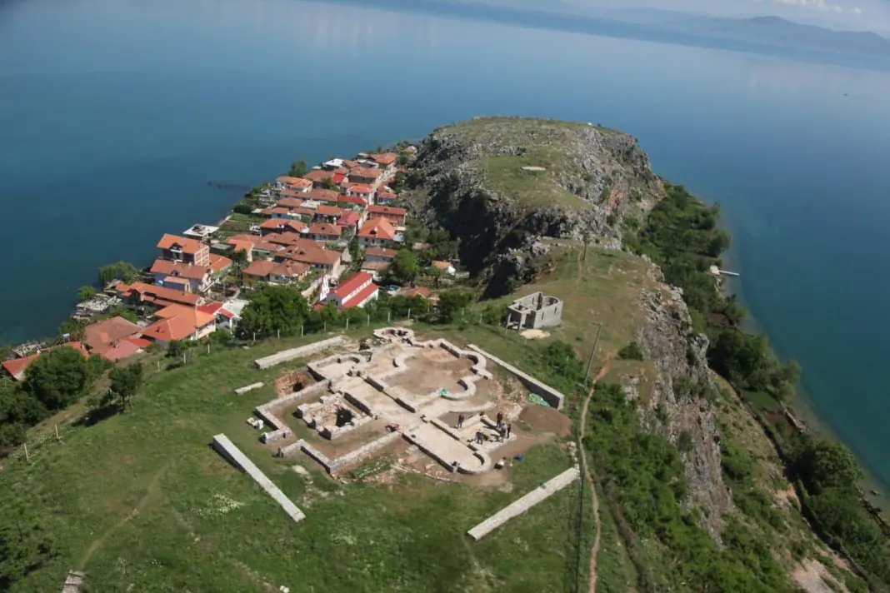
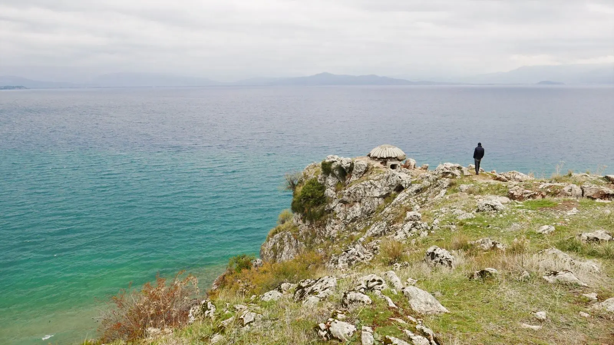
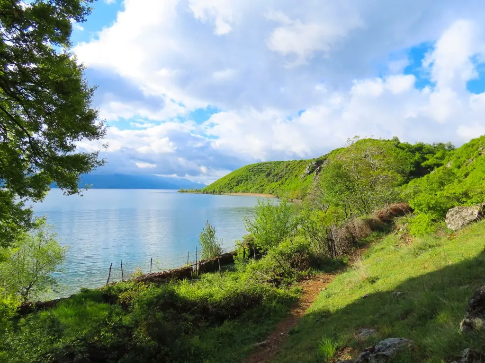

Atraksionet
Zbuloni Vendet e Bukura

Trashëgimi
Bazilika Paleokristiane
Gërmadhat e shenjta me mozaikë të shekullit V-VI — zemra shpirtërore e Linit.

Natyrë
Liqeni i Ohrit
Ujërat kristal, pellg natyror UNESCO — njëri nga liqenet më të vjetër në botë.

Pamje
Perëndimi i Diellit
Nga brigjet e Linit shihet ndoshta perëndimi i diellit më i bukur i gjithë Ballkanit.

Fshat
Rrugica të Gurta
Labirinti i rrugicave me kalldrëm — çdo kthesë zbulon histori dhe arkitekturë tradicionale.

Panoramë
Pikat Panoramike
Majat mbi fshat ofrojnë pamje 360° të liqenit, maleve maqedonase dhe tokave shqiptare.

Ujë
Bregu i Liqenit
Guri i bardhë dhe ujërat e tejdukshme — perfecte për not, relaksim dhe fotografi.